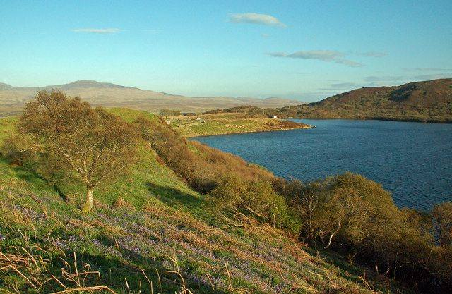

Ardnahoe was built by the Laing family of the independent bottler Hunter Laing, who found the four-acre site above Ardnahoe Loch in 2015. The first spirit ran in 2018.
Legendary Islay distiller Jim McEwan, who had run Bowmore and brought Bruichladdich back to life, came out of retirement to set up production.
It's the only distillery on Islay to cool its spirit in worm tubs: long copper coils sitting in tanks of cold water. It's slower and less efficient, but it gives a heavier, more textured spirit. The two copper stills have unusually long lyne arms, and the barley is milled on a 100-year-old Boby mill, the only second-hand kit in the place.
Look out for: Ardnahoe Loch just behind the distillery, where the little rowing boats sit on the water, and the CalMac ferry crossing the Sound to Port Askaig below.
